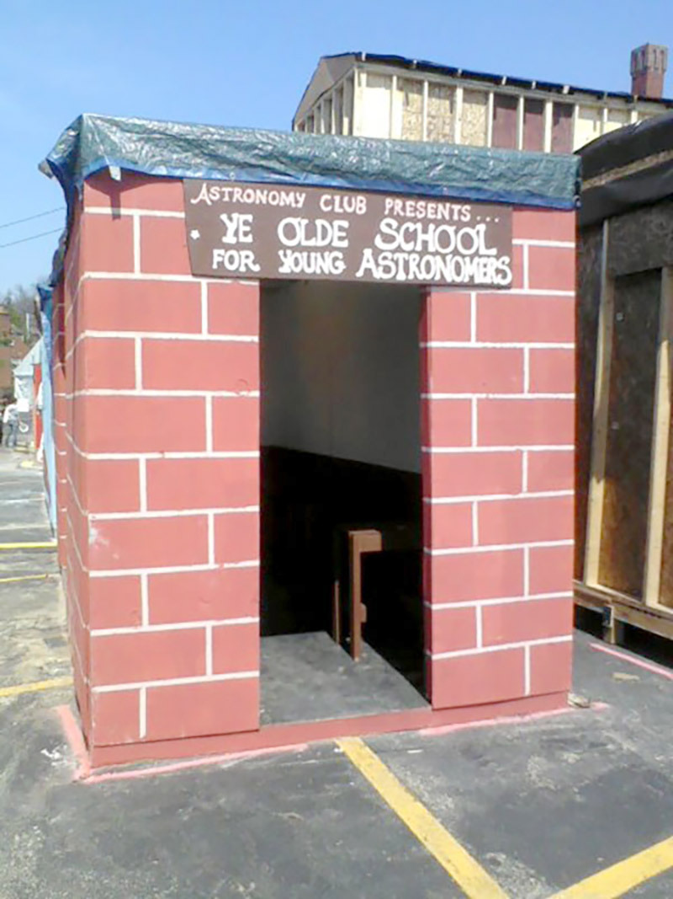
Booth Chair: Rachel Wagner
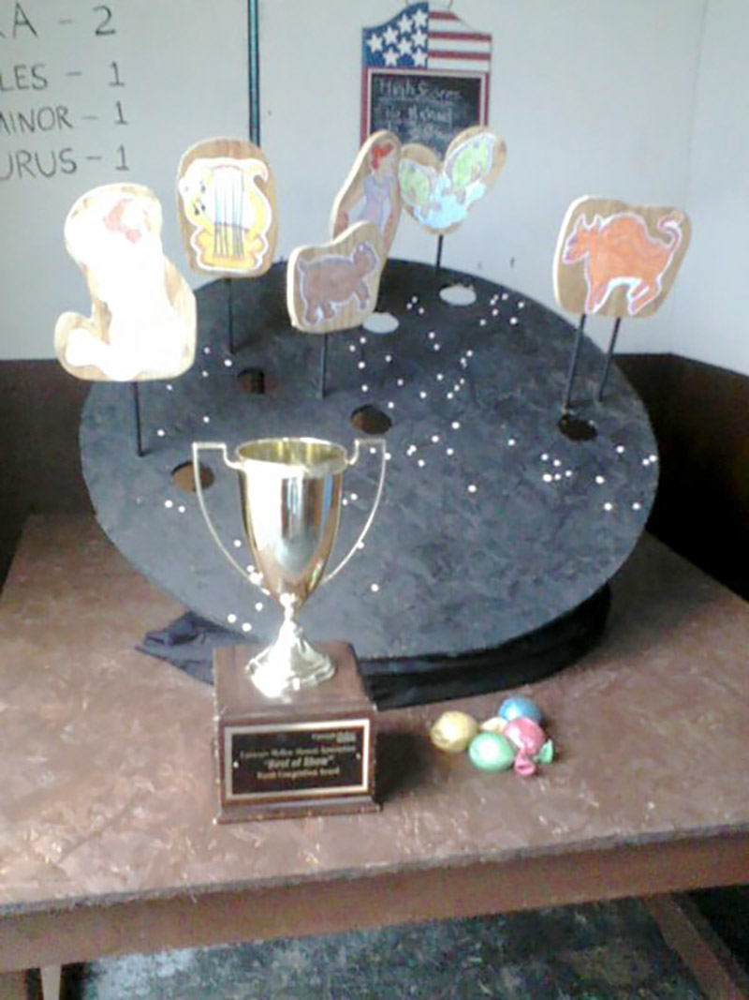
Toss game and "Best of Show" award
2012
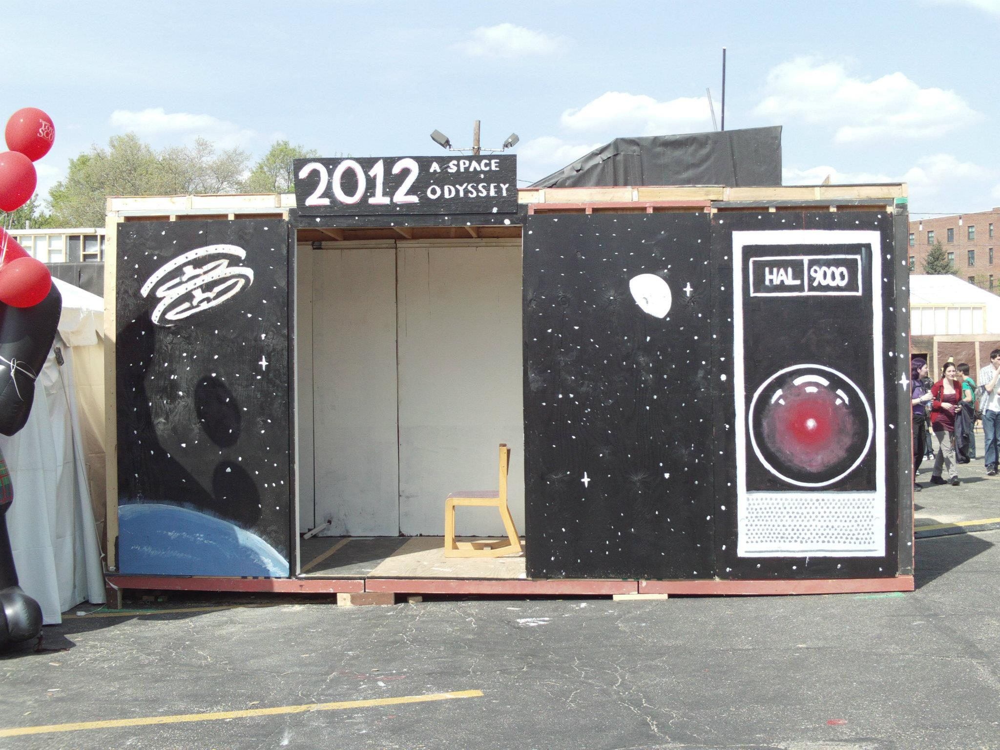
Spring Carnival theme was "As Seen on TV."
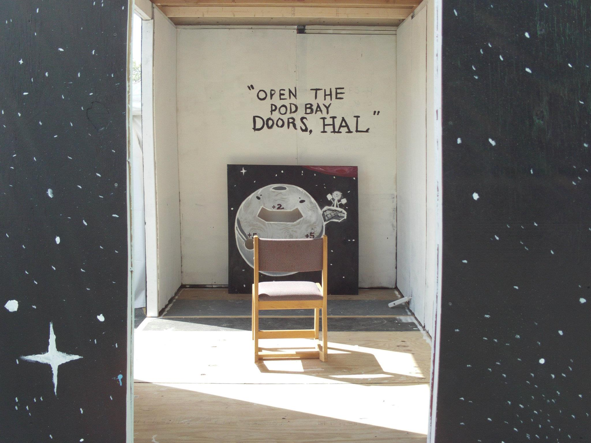
2001: A Space Odyssey, Booth Chair: Matt Finlay
2013
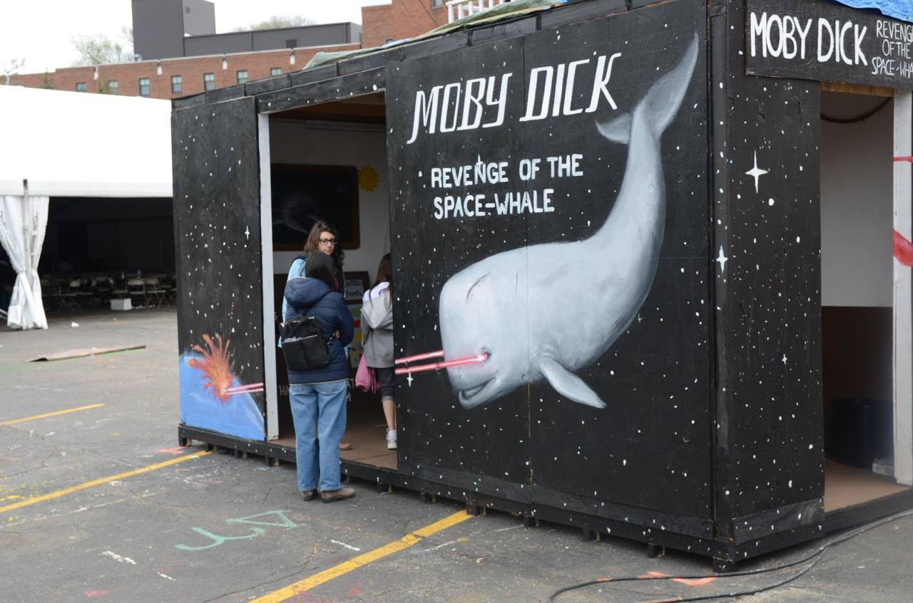
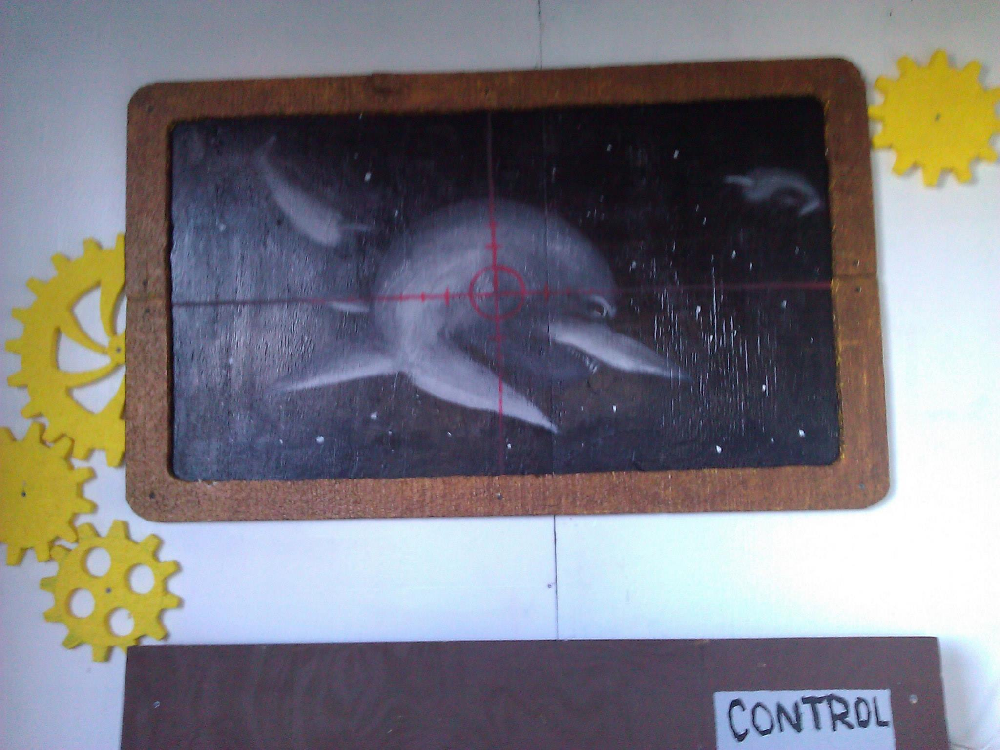
Booth Chair: Matt Finlay
2014
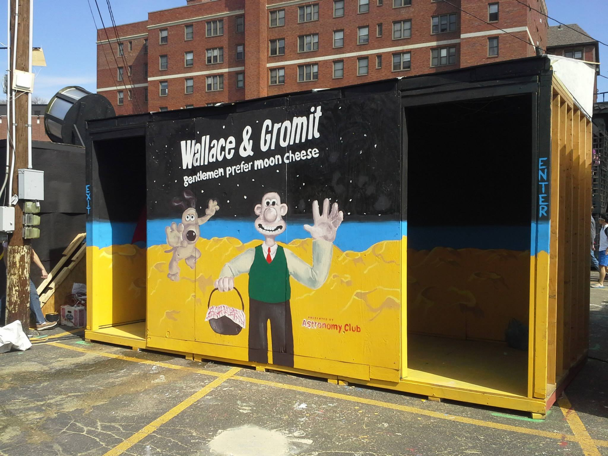
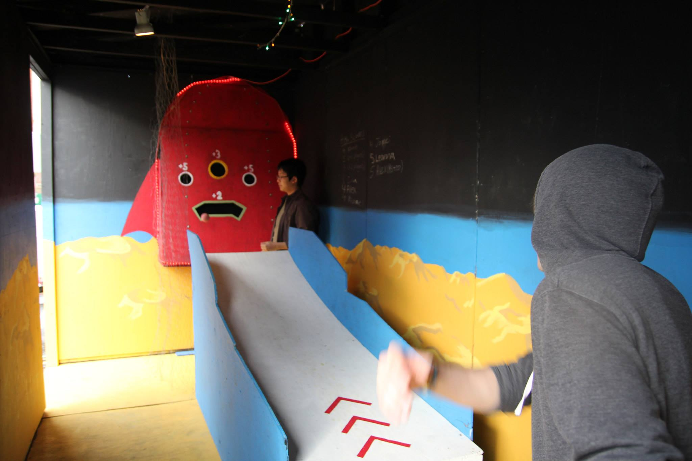
Booth Chairs: M. Finlay & A. Gurvich & Amanda Marano
2015
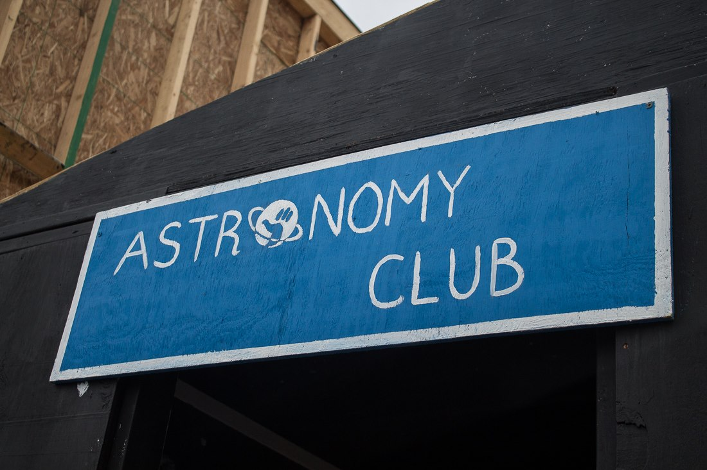
Entrance Sign, Booth Chairs: Onyenma Enwereji & Amanda Marano
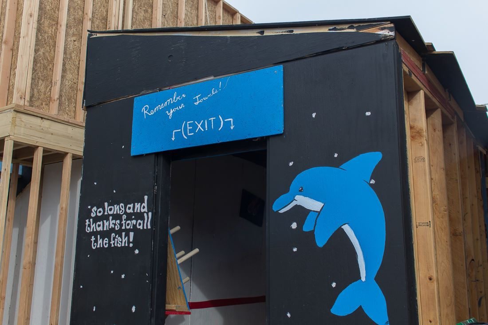
The exit of our booth.
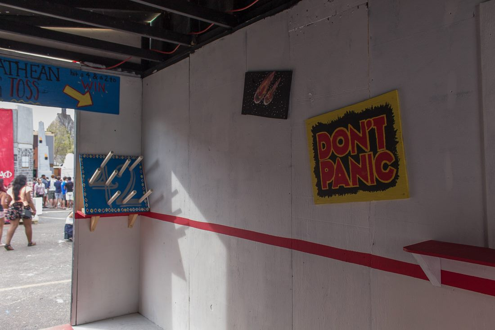
The interior of the booth, showing our game, ring toss.
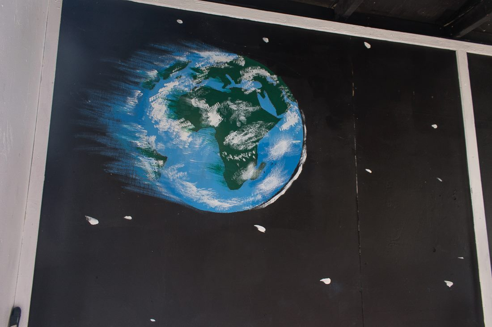
Another interior picture, showing our painting.
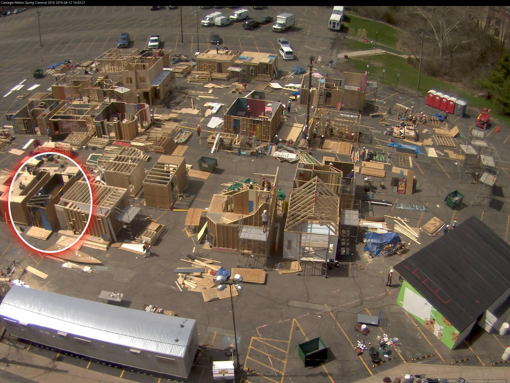
The booth under construction. Timelapse of the construction.